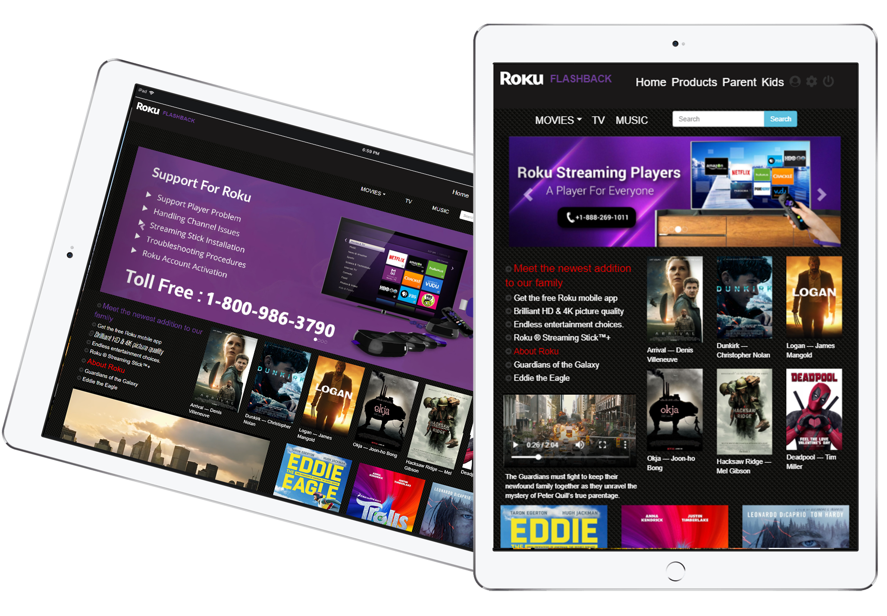

OVERVIEW
Roku Flashback --- this is an admin project based on the Roku, which provides a method for parents to supervise the item displayed in kid's page. Customers can log in their account, filter and select a movie, tv-show or audio based on user profile (adult or kids).
There are three main part designs: parent, home, kids. And also some simplified layout change for login, detail, user select page.
Project Link
www.roku.git.comTo view and read more about the application visit www.roku.git.com
Type
App Design, Development, UX/UI
Date
March 2019
Technologies


SHOWCASE

The parent page is putting everything inside, which includes Roku ads and Roku TV ads form Roku official site, and Movies, TV, Music, and News part. The original home page, which is in the userhomeComponent.js, performs as the detail page. Therefore, once custom click the exact movie, it will jump into this page and show the information and the custom also can get other movies’ details by clicking the thumbnail.
